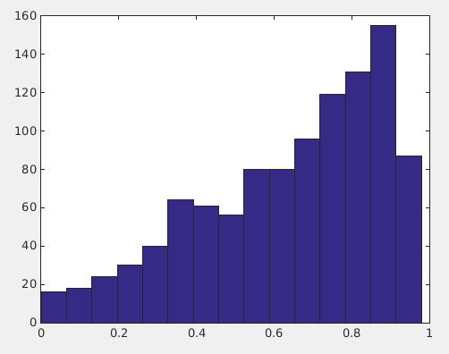
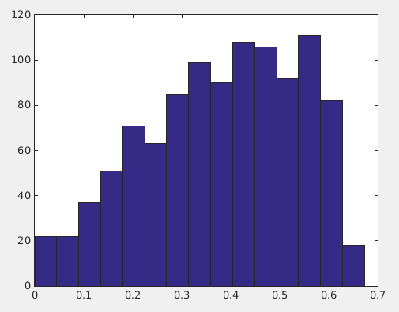
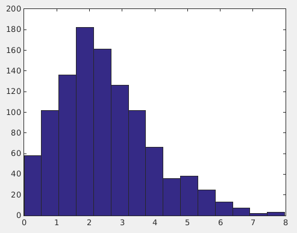

Introduction (Elizabeth Forbes)
Topic modeling is a technique that allows researchers to quantitatively find correlations between words in a corpus, in order to unearth the overarching themes in said corpus. For example, it makes intuitive sense that religious documents would include words referencing religious topics: god, sacrifice, etc. Topic modeling algorithms would allow a theologian to mine those documents for these themes, uncovering them quickly and without human error.
In the context of social networks, topic modeling can be useful in terms of elucidating network structure based on shared interests, or homophily. Homophily between players in a social network has been measured in a multitude of ways. For example, in order to understand the patterns of collaboration between academics at Stanford University over time, Dahlander and McFarland used similarity measures to correlate their co-citations with status variables: gender, age, ethnicity, and tenure status. They found that homophily was a major driver of collaborations between academics (Dahlander and McFarland 2013). Topic modeling, however, affords another potential facet for analysis. Instead of measuring homophily using demographic features, topic modeling can be used to determine whether shared topic interests influence bonds in social networks. For example, are people who are friends on Facebook more likely to post about similar topics, in terms of politics, musical taste, etc?
The Twitter network provides a novel social landscape in which to measure homophily. Created in 2006, Twitter is a platform for sharing information using messages of 140 characters or less. Twitter users can form ties by ‘following’ each other, receiving updates on the tweets of their network members, and sharing their own tweets with their network. The question thus arises: does social network theory regarding homophily hold true in the Twitterverse? Do ties on twitter mean that users share common interests, i.e. do they tweet about the same topics as their connections do? We aim to answer this question by using Latent Dirichclet Allocation, or LDA, which is a popular algorithm for topic modeling, to determine the most frequent topics that Twitter users tweet about. We will then compare each user’s most frequent topics with those of their neighbors in order to confirm or deny the existence of homophily in the Twitterverse. We expect to see considerable homophily between a user and the members of their one-hop network.
Methods
Data and Sampling (Rafael Melendez)
We used the SNAP Twitter dataset from Stanford for the project. The dataset contains a sample of 476 million tweets from roughly 17 million users from June to December of 2009. Since topic models such as LDA work with a corpus of documents, we transformed the set of tweets into documents by aggregating them per user to create user documents. Rather than performing topic modeling over a corpus representing the entire dataset, we worked on a subset of the data.
Because our dataset also contained tweets in languages other than English, we first created a reduced dataset of English language tweets. We then limited ourselves to users who had at least 1000 tweets in this new set, and at least 10 neighbors in the network - where a neighbor is either a follower or a followee. From this subset of users, we randomly samples 110. For each of these 110 users, we then proceeded to randomly sample 20 of their neighbors neighbors, for a total of 1057 sampled users. Finally, for each user in this final sample list, we randomly sampled 1000 of their tweets in English to create the corpus on which we performed topic modeling (LDA).
LDA (Tegan Brennan)
Latent Dirichlet Association, or LDA, is a topic model used to discover abstract topics that appear in a collection of documents. It is a generative model in which each document is viewed as a finite mixture over an underlying set of topics and each topic in turn is represented as a multinomial probability distribution over words. The appearance of each word in the document can thus be attributed to one of the document’s topics. We used the python package LDA in order to run LDA on our Twitter dataset. This allowed us to obtain the top topics in the corpus as well as information about how frequently each user tweets about each topic. We used this frequency to determine which topics are of most interest to a user. In order to effectively run LDA, we needed to be careful about how we represented our data which included how we choose to preprocess the messy tweets. After stripping punctuation from words, we removed urls and stopwords from our dataset using a list from the NLTK toolkit as well as our own set of words generated from our observations of the tweets. We then stemmed the remaining words using the Porter stemmer. Running LDA on this preprocessed data, we were able to obtain which topics most interested each Twitter user. We experimented with different choices for the number of topics in order to generate the best results.

Measuring Homophily (Roman Kazarin)
Using the output from LDA, we are able to map each user to a topic distribution. Using this distribution, we calculate three different metrics for homophily: binary homophily, homophily ratio, and Kullback Leibler Distance. Binary homophily takes each user, and calculates how many neighbors share at least one top-3 topic with the user; this is then divided by the number of neighbors the user has. The homophily ratio is slightly more complex. It takes each user, and sums up the proportion of top-3 topics the user shares with his/her neighbor, for each neighbor; this is then divided by the number of neighbors the user has. Kullback Leibler is a completely different comparison algorithm: it works by measuring the difference between two probability distributions. For both binary homophily and homphily ratio measures, the higher the measure for each user, the more homophilous that user is with his/her neighbors. Kullback Leibler on the other hand is the exact opposite: the lower the measure, the more homophilous a user and his/her neighbors are.
Binary Homophily
The number of neighbors who have at least one top topic in common with the user divided by the total number of neighbors.

Ratio Homophily
The average ratio of number of top topics in common to total number of top topics, over all neighbors.

Kullback Leibler
Measures the difference between two probability distributions.

Visualization (Michael Nekrasov)
We visualize the results by extending on the concept of egocentric networks (egonets hereafter). We depict the breakdown of content a user tweets by using a pie chart to represent the proportion of each topic for the content a user posts. A user following another is represented as an undirected edge forming a graph.The topics are consistently colored and the homophiliy between users can be examined by observing the difference in topic ratios between the connected neighbors. Users with high homophiliy would theoretically have similar pie chart breakdowns.
The visualization uses the D3 javascript library for web based visualization. To layout the nodes we use a force layout for positioning the nodes. To reduce load time for the user, we pre-run the physics simulation and save the result as the initial state for the interactive web version. To accommodate the large number of nodes we implemented panning and zooming. So that users can examine the homophiliy of a particular neighborhood, we allow users to doubleclick on a particular node to isolate it and the neighbors.
- Zoom: Mouse Wheel
- Pan: Click and drag
- Isolate Neighberhood: double click node
- More Info: Hover over node, shows total degree, along with homophily ratio to neighbors
- Fullscreen: Button bellow graph, to exit refresh the page